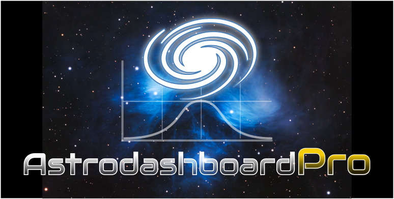

LANGUAGE

v5.5.0-Global

v5.5.0-Global
--° x --°
AstroDashboard è progettata per essere il "Direttore d'Orchestra" della tua strumentazione. Fonde dati ambientali, calcoli trigonometrici e intelligenza artificiale per eliminare i tempi morti e ottimizzare ogni singolo secondo della tua notte sotto le stelle.